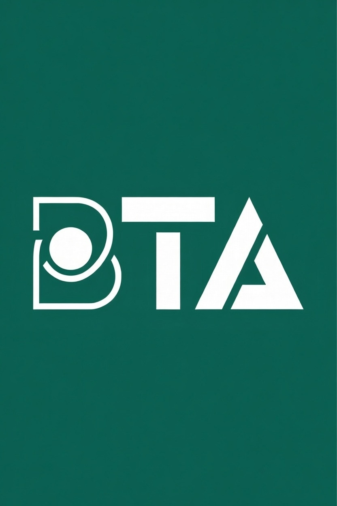

This website gives access to BTA Application tool used by learners and teachers in their learning and teaching process. The application helps review and also sets standard examination questions for candidates and/or for class discussion. BTA is essential for students preparing for any major academic or promotional examination. This App is subject specific and becomes relevant in any academic subject or course within the Ghanaian curriculum.